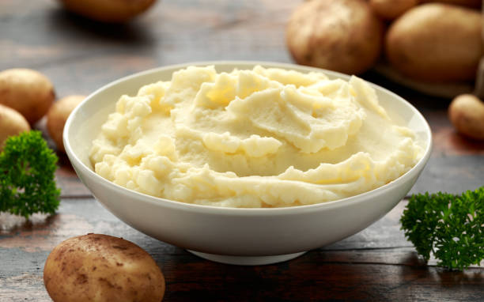

Odin Mashed Potatoes

Description:
Ingredients:
-
2 lbs (about 4-5 medium) potatoes, peeled and cut into 1-inch chunks
- 1/2 cup milk or cream, warmed
- 1/4 cup butter, softened
- Salt and pepper to taste
- Optional: Fresh chives or parsley for garnish
Steps:
-
Place the potato chunks in a large pot and cover with cold, salted
water.
-
Bring the water to a boil, then reduce the heat and simmer until the
potatoes are tender when pierced with a fork (about 15-20 minutes).
- Drain the potatoes well in a colander.
-
Return the drained potatoes to the empty pot. Mash them with a potato
masher until smooth.
-
Add the softened butter and the warm milk or cream. Stir until the
mixture is creamy and smooth.
- Season with salt and pepper to taste.
Back to the MainPage